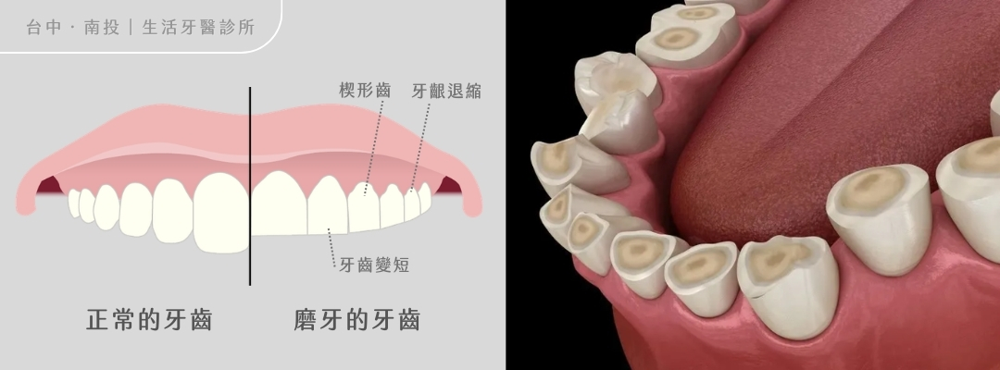
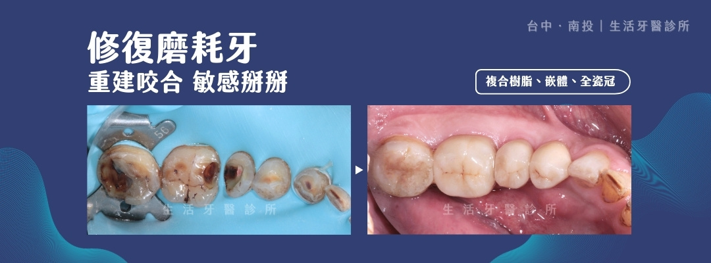

你是否發現牙齒越來越短，吃冰、吃酸時總是痠軟不適，甚至笑起來牙齒看起來黃黃、扁扁的？
這些變化不一定只是敏感性牙齒或自然老化，也可能是牙齒長期磨耗發出的警訊。及早找出原因並評估咬合與齒質狀況，有助於保留更多自然牙。
1. 為什麼會磨牙？
磨牙通常不是單一原因造成，而是心理狀態、生理條件與生活習慣交互影響的結果。
01
心理因素
壓力與焦慮可能讓人在白天不自覺緊咬，或在睡眠中出現磨牙行為。
02
生理因素
咬合不正、睡眠呼吸中止症及睡眠磨牙等狀況，都可能增加牙齒磨耗風險。
03
生活習慣
過多外在刺激可能讓大腦神經維持亢奮，連帶增加夜間緊咬與磨牙的機會。
2. 牙齒過度磨耗帶來的 3 大影響

牙齒比例變短
牙齒經年累月磨耗後會逐漸變短，改變原本的齒形比例，也可能讓笑容顯得較為老態。
牙齒變得敏感
當外層琺瑯質被磨薄，內層牙本質暴露，牙齒會對冷、熱、酸、甜的刺激變得更加敏感。
牙齦退縮與楔形缺損
咬合壓力過重可能使牙齦邊緣逐漸後退，牙頸部也可能出現楔形缺損，讓脆弱牙根暴露。
3. 磨牙修復實際案例
本案例患者除了長年累積的齒質磨耗，也合併深層蛀牙。生活牙醫薛青坡醫師經過詳細評估後，依照不同牙齒的缺損程度，搭配複合樹脂、陶瓷嵌體與全瓷冠進行修復。
這類重建需要兼顧咬合功能、齒質保存與美觀比例。雖然治療較為費工，但分區選擇合適材料，能在恢復咀嚼功能的同時，盡可能保留珍貴的自然齒質。

4. 依照缺損程度選擇修復方式
01
複合樹脂修復
適合細微缺損的小範圍修復，可直接填補磨耗部位，盡可能保存自然齒質。
02
陶瓷嵌體
適用於中、大範圍磨耗或蛀牙，以接近齒質硬度的陶瓷精準修補，兼顧耐用度與密合性。
03
全瓷冠
結構較脆弱的牙齒可使用全瓷冠完整包覆保護，並重建接近自然牙的色澤、外形與咬合力。
醫師提醒
每顆牙齒的磨耗深度與剩餘齒質不同，需由醫師評估後選擇合適材料；修復完成後，也應持續追蹤咬合與磨牙習慣。